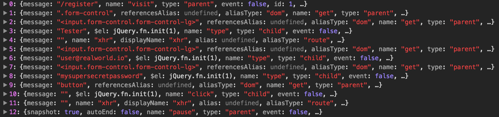

Cypress waitings and execution order
In the previous chapter, we've written this initial test
it("The happy path should work", () => {
cy.visit("/register");
cy.get(".form-control").then($els => {
cy.get($els[0]).type("Tester");
cy.get($els[1]).type("user@realworld.io");
cy.get($els[2]).type("mysupersecretpassword");
cy.get("button").click();
cy.contains("No articles are here").should("be.visible");
});
});
Without noting it, we've leveraged some interesting features of Cypress.
Automatic waiting
This is a mind-blowing feature: did you notice that the test seems a synchronous flow? Think about what happens between a command and the next one:
cy.visit("/register");
// what does "visit" mean? When is Cypress going to execute the next commands? Is JavaScript ready?
cy.get(".form-control").then($els => {
cy.get($els[0]).type("Tester");
// typing is an asynchronous task, when will the next task start?
cy.get($els[1]).type("user@realworld.io");
cy.get($els[2]).type("mysupersecretpassword");
cy.get("button").click();
// the web app makes an AJAX call, a lot of time passes before the "No articles are here" text becomes visible
cy.contains("No articles are here").should("be.visible");
});
Well: in every UI test, everything is asynchronous. The JavaScript execution is asynchronous, the DOM update is asynchronous, the actions of the user are asynchronous... A synchronous approach is a failure by definition.
Most of the existing browser automation tools (like Selenium or Puppeteer) force you to manually manage a lot of asynchronous situations, while Cypress is asynchronous at its core (read more about a detailed comparison with the Await, do not make your E2E tests sleep post). Cypress has been created with UI testing in mind.
Automatic waitings are so important because:
they allow you to do not care about a lot of asynchronous updates
they make the test as fast as possible, avoiding fixed (and slow, and brittle) test pauses (we are going to deepen the topic in the next chapters)
Answering the questions added as comments to the above snippet:
cy.visitwaits for the window dispatches theloadeventevent if typing is a "long" task (every letter is typed one by one) the next command is not executed until the typing ends
Cypress retries
cy.contains,cy.get, and other commands by default. The commands have customizable timeout and when Cypress is not able to find the requested elements, they are retried until the elements are added to the page (or throw an error if the timeout is not respected). You can read everything about Cypress retry-ability in the official documentation
Test Runner interactivity
The Test Runner shows you what's happening in the front-end application, every executed Cypress command, and the result of all the assertions. And it's interactive, too! Take a look at the following video
it shows how the Test Runner allows you to "time travel" the various phases and check the state of the front-end before and after the execution of every command. As usual, take a look at the Test Runner documentation to discover more about it.
Test code execution order
That's the weird thing you need to get used with Cypress. As we told in advance, every Cypress command is asynchronous by default. That means that Cypress executes the test code twice:
the first time Cypress executes the test code to read and queue all the commands it needs to execute
then Cypress loads the page, and executes, one by one, all the command previously queued
Even the commands execution order is not what could seem at a first sight. Try changing the test code to
it("The happy path should work", () => {
cy.visit("/register");
cy.get(".form-control").then($els => {
cy.get($els[0]).type("Tester");
cy.get($els[1]).type("user@realworld.io");
cy.get($els[2]).type("mysupersecretpassword");
- cy.get("button").click();
- cy.contains("No articles are here").should("be.visible");
});
+ cy.get("button").click();
+ cy.contains("No articles are here").should("be.visible");
});
Run the test and you will see that nothing changes. That's because, independently from the nesting level, Cypress waits for the previous commands (like cy.get($els[2]).type("...")) to be completed before running the next ones (like cy.get("button").click();). This unique feature allows writing more readable tests.
The downside is that you can not leverage commands returning variables the way you expect. Something like
const button = cy.get("button");
button.click(); // nope
will not work as expected. Every Cypress command yields a value and you must .then() it to consume the value.
cy.get("button").then($button => button.click());
// or simply
cy.get("button").click();
the latter is possible because every command is executed on the previous yielded value/subject.
Last but not least: commands can be chained on the cy object:
cy.visit("/register");
cy.get(".form-control").then($els => {
cy.get($els[0]).type("Tester");
cy.get($els[1]).type("user@realworld.io");
cy.get($els[2]).type("mysupersecretpassword");
cy.get("button").click();
cy.contains("No articles are here").should("be.visible");
});
// is equivalent to
cy.visit("/register")
.get(".form-control")
.then($els => {
cy.get($els[0])
.type("Tester")
.get($els[1])
.type("user@realworld.io")
.get($els[2])
.type("mysupersecretpassword")
.get("button")
.click();
});
cy.contains("No articles are here").should("be.visible");
You can choose the syntax you're more comfortable with. Read more about the asynchronicity nature of Cypress in the official documentation.
p.s. out of curiosity: you can log the Cypress queued commands with a slight change to the code
-it("The happy path should work", () => {
+it("The happy path should work", function() {
cy.visit("/register");
cy.get(".form-control").then($els => {
cy.get($els[0]).type("Tester");
cy.get($els[1]).type("user@realworld.io");
cy.get($els[2]).type("mysupersecretpassword");
cy.get("button").click();
cy.contains("No articles are here").should("be.visible");
+ console.log(this.test.commands);
});
});
That's the result 
read here why you need to use the standard function() {} syntax instead of the arrow function () => {} syntax.